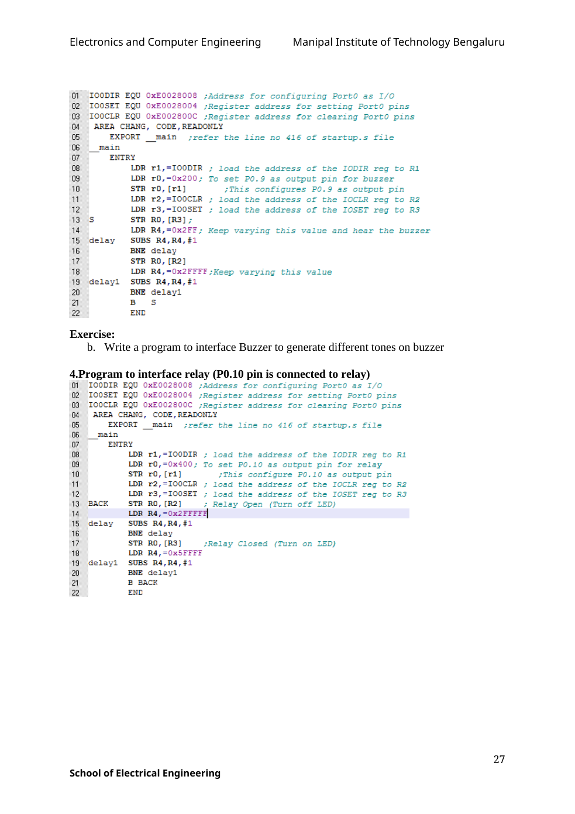

Copyable text transcription
OCR-generated from the original manual page. Check register names, labels, constants and punctuation against the reference image before using.
Electronics and Computer Engineering Manipal Institute of Technology Bengaluru
01 IOODIR EQU OxE0028008 ;Address for configuring Port0 as I/O
02 IOOSET EQU OxE0028004 ;Register address for setting PortO pins
03 IOOCLR EQU OxE002800C ;Register address for clearing PortO pins
04 AREA CHANG, CODE, READONLY
05 EXPORT main -;refer the line no 416 of startup.s file
06 _ main
07 ENTRY
08 LDR r1,=IOODIR ; load the address of the IODIR reg to R1
09 LDR r0,=0x200; To set PO.9 as output pin for buzzer
10 STR rO, (ri) *This configures P0.9 as output pin
11 LDR r2,=IOOCLR ; load the address of the IOCLR reg to R2
12 LDR r3,=IO0SET ; load the address of the IOSET reg to R3
13S STR RO, (R3] ;
14 LDR R4,=Ox2FF; Keep varying this value and hear the buzzer
15 delay SUBS R4,R4,#1
16 BNE delay
7 STR RO, [R2]
18 LDR R4,=Ox2FFFF ;Keep varying this value
19 delayl SUBS R4,R4,#1
20 BNE delayi
21 B Ss
22 END
Exercise:
b. Write a program to interface Buzzer to generate different tones on buzzer
4.Program to interface relay (P0.10 pin is connected to relay)
O01 IOODIR EQU OxE0028008 ;Address for configuring PortO as I/O
02 IOOSET EQU 0OxE0028004 ;Register address for setting Port0 pins
03 IOOCLR EQU OxE002800C ;Register address for clearing PortO pins
04 AREA CHANG, CODE, READONLY
06 EXPORT _ main ;refer the line no 416 of startup.s file
06 _ main
07 ENTRY
08 LDR r1,=IOODIR ; load the address of the IODIR reg to Rl
it} LDR r0,=0x400; To set P0.10 as output pin for relay
10 STR rO, [ri] *This configure P0.10 as output pin
ahi LDR r2,=IOOCLR ; load the address of the IOCLR reg to R2
12 LDR r3,=IO0SET ; load the address of the IOSET reg to R32
13. BACK STR RO, [R2] ¢ Relay Open (Turn off LED)
14 LDR R4,=0x2FFFFA
15 delay SUBS R4,R4,#1
16 BNE delay
7 STR RO, [R3] 7Relay Closed (Turn on LED)
18 LDR R4,=OxSFFFF
19 delayi SUBS R4,R4,#1
20 BNE delayi
21 B BACK
22 END
27
School of Electrical EngineeringView original manual page (reference)
